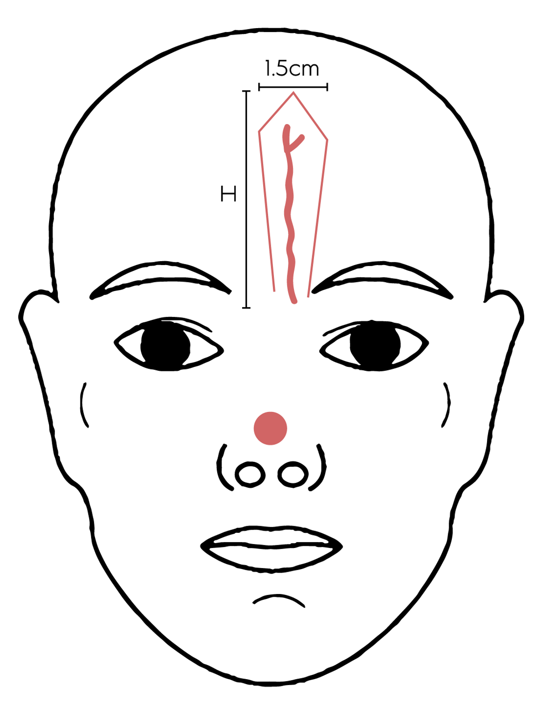

Key Measurements
- Hand-held doppler used to identify location of the supratrochlear artery, main blood supply of this flap.
- The artery is typically 1.7-2.2 cm from the midline at the level of the supraorbital rim
- Typically, the donor site is contralateral to the nasal defect (Ex: for a right alar defect, use a left paramedian donor site)
- The incision must be at least 1.5cm lateral to the identified location of the supratrochlear artery to prevent vascular compromise. 